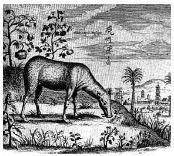

ŞEKİL 40. Athanasius Kircher’in bir kitabındaki Çin misk keçisini gösteren bu resmin, ağırlıklı olarak misyoner Cizvit Michal Boym’dan alıntılandığı anlaşılmaktadır (A. Kircher, China monumentis illustrata, Amsterdam, 1667).84
Kircher, yoğun bir Cizvit haberleşme ağının aşırı etkin olduğu, Roma’daki Cizvit Derneği’nin ana merkezinde oturuyordu. Redi ise, doğrulayamadığı sürece tüm bu bilgilere güvensizlik duyuyordu. Kircher ve Redi, yılantaşının zehirlenmeyi tedavi etmede etkili olduğu konusunda birbirleri ile asla anlaşamadılar; anlaştıkları nokta ise, hayvanlar üzerindeki deneysel sınamaların tıbbî bilgi içinde önemli bir yeri olduğu idi.
1687 yılında hekim ve anatomist Edward Tyson (1650-1708), Amerikan çıngıraklı yılanı konusundaki geniş çalışmasının bir bölümü olarak yılantaşının bir betimini vermiştir. Burada, damla hastalığından mustarip bir kadının tedavisinde yılantaşının etkili olduğunun saptandığını belirtmektedir. 1697’de, hemen hemen Kircher’in ölümünden yirmi yıl sonra geniş ölçüde saygınlık kazanmış doğa araştırmacısı Paolo Boccone (1633-1704), yılantaşı konusunda yazmış ve onun lehine kanıtlar ileri sürmüştür. Lucca’lı bir Cizvit olan Giuseppe Maffei, bu konuda Roma’da dört deney yapmıştır. Kardinal Fabio Chigi’nin (sonradan Papa VII. Alexander) (1599-1667) sarayındaki hekimler, engereklerin ısırdığı birkaç av köpeğini tedavi etmişler, başka kişiler ise yılantaşlarının acı veren örümcek ısırmalarını tedavi ettiğini kanıtlamışlardır. Almanya’da kuduz bir kurt tarafından ısırılmış bir hasta yılantaşıyla tedavi edilmiş, bu konuda başka bir haber ise yılantaşının “kötücül ateşlenme” gösteren hastaların bileklerine sarıldığında başarılı sonuç verdiği şeklinde gelmiştir. Sonuç olarak Boccone, aşırı gaz yapan karınların, hastanın rektumu yoluyla yılantaşının uygulanması sonucu iyileştiğine ilişkin çok sayıdaki raporu, kendi üzerinde gerçekleştirdiği deneyle de doğrulamıştır.84